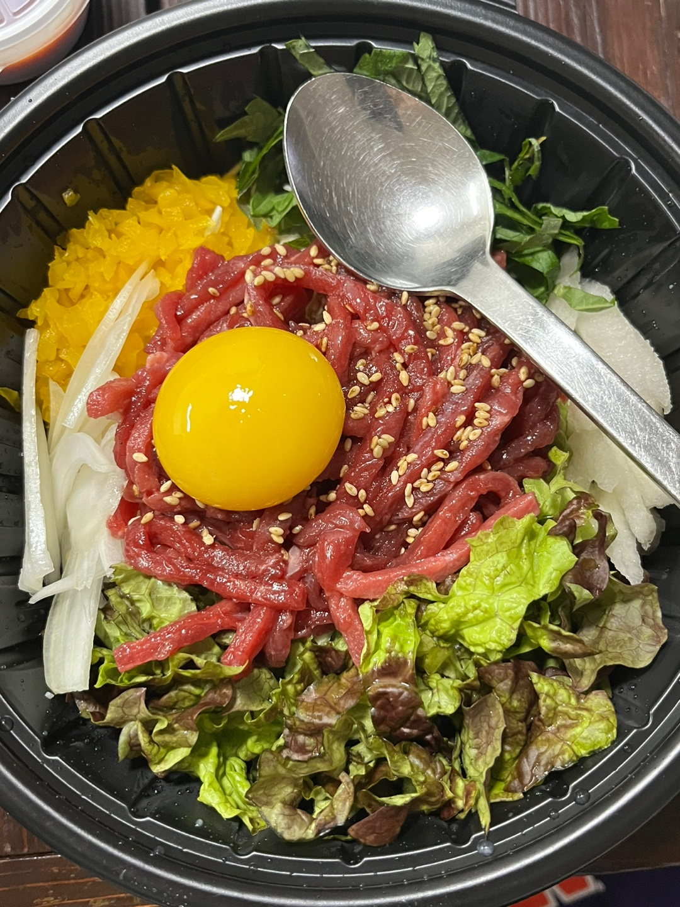
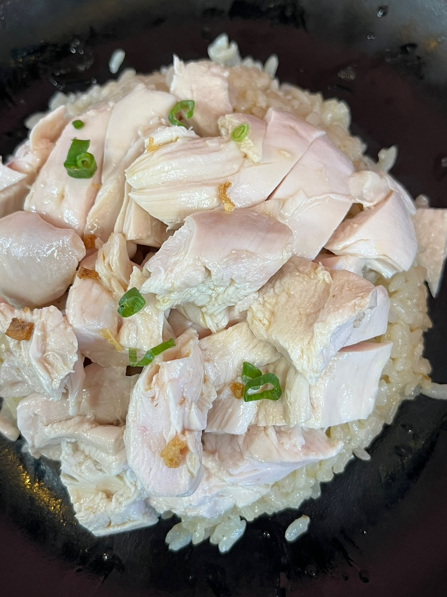
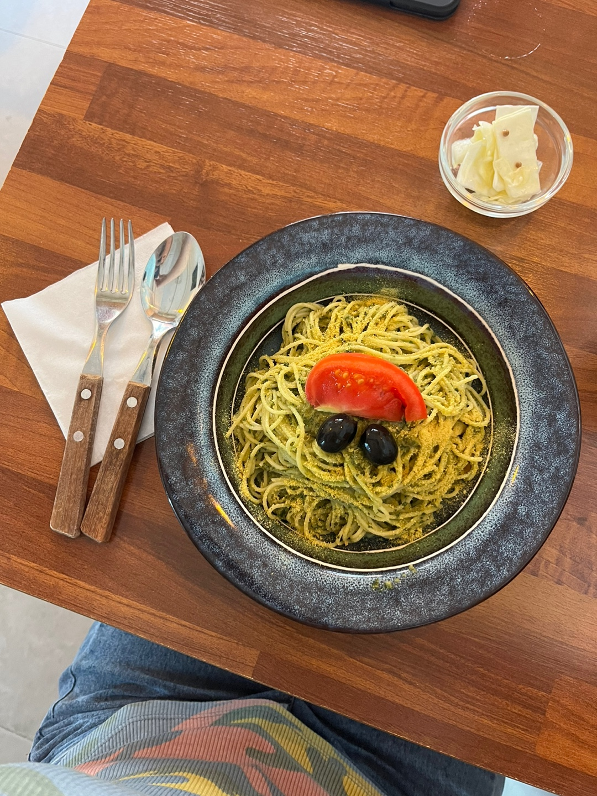

안녕하세요!! 저는 서지현입니다~~
저는 21살입니다.
오늘은 제가 좋아하는 음식에 대해 소개하겠습니다.
첫번째로는 닭갈비입니다. 저는 닭요리 중에 닭갈비를 제일 좋아합니다.
두번째로는 육회덮밥입니다.
저는 육회나, 스시같은 날고기류를 정말 좋아합니다. 원래 스시를 훨씬 더 좋아했는데 요즘은 육회를 더 선호합니다.
세번째로는 아마 많은 분들이 아실 까이식당의 치킨라이스입니다
저는 지난 주에 치킨라이스를 처음 먹어봤는데요. 생각보다 너무 맛있어서 깜짝 놀랐습니다.
마지막으로는 '이 세계는 놀이터예요'라는 식당에서 파는 취나물 제노베제 파스타입니다
개인적으로 저는 일주일에 한 번 정도는 비건식을 실천하려고 노력하는데요.
학교 앞에 비건 식당이 있어서 자주 애용하는 편입니다. 이 식당은 사실 파스타보다 샌드위치가 더 맛있습니다.